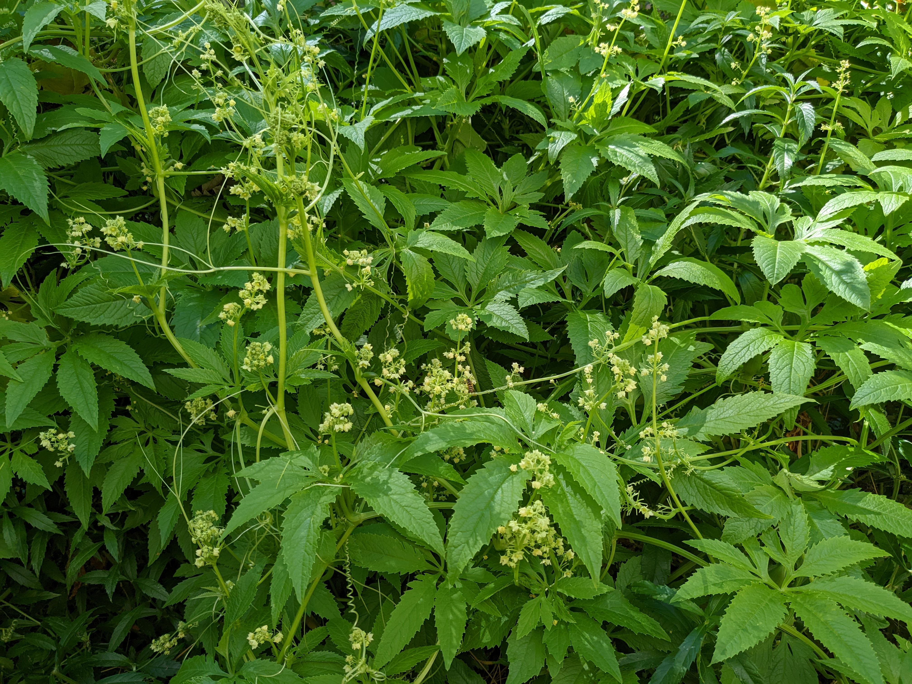
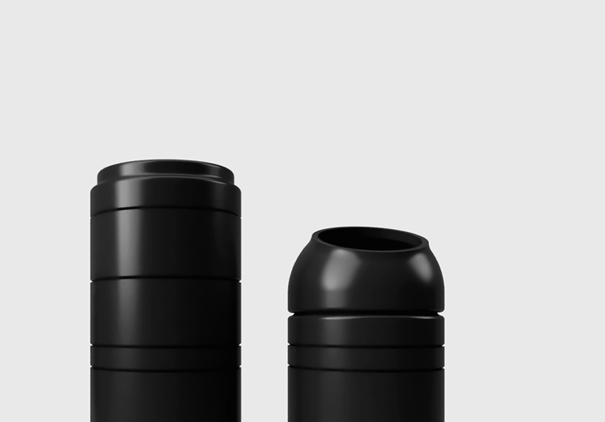

What does the garden of the future look like? A book about resiliant and often obscure food plants from around the world, along with the methods I use to grow them without any external input.

Native fruit, wild vegetables and uncommon crops from the other side of the planet. Grown in a regenerative food forest and delivered directly to community residents.

A modular, 3D printed planter designed for optimal indoor plant growth. Self-watering and portable.